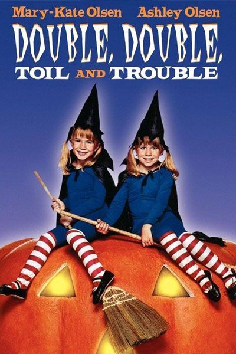
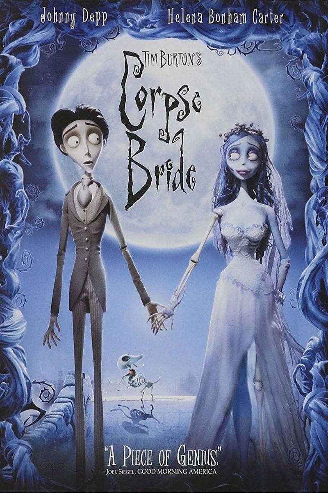
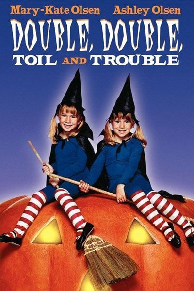
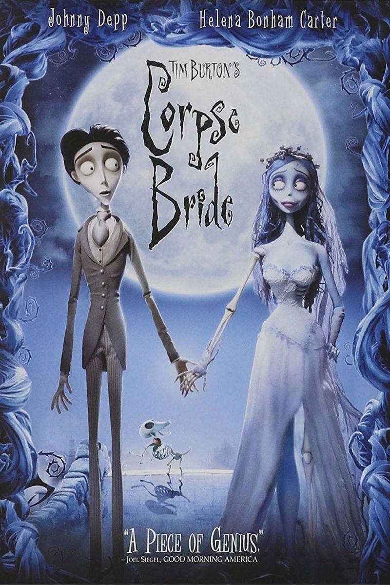

HISTORY
Ancient Origins of Halloween
Halloween's origins date back to the ancient Celtic festival of Samhain (pronounced sow-in). The Celts, who lived 2,000 years ago, mostly in the area that is now Ireland, the United Kingdom and northern France, celebrated their new year on November 1. This day marked the end of summer and the harvest and the beginning of the dark, cold winter, a time of year that was often associated with human death. Celts believed that on the night before the new year, the boundary between the worlds of the living and the dead became blurred. On the night of October 31 they celebrated Samhain, when it was believed that the ghosts of the dead returned to earth.
History of Jack O'Lanterns
People have been making Jack O'Lanterns at Halloween for centuries. The practice originated from an Irish myth about a man nicknamed “Stingy Jack.” According to the story, Stingy Jack invited the Devil to have a drink with him. True to his name, Stingy Jack didn't want to pay for his drink, so he convinced the Devil to turn himself into a coin that Jack could use to buy their drinks. Once the Devil did so, Jack decided to keep the money and put it into his pocket next to a silver cross, which prevented the Devil from changing back into his original form. Jack eventually freed the Devil, under the condition that he would not bother Jack for one year and that, should Jack die, he would not claim his soul. The next year, Jack again tricked the Devil into climbing into a tree to pick a piece of fruit. While he was up in the tree, Jack carved a sign of the cross into the tree's bark so that the Devil could not come down until the Devil promised Jack not to bother him for ten more years. Soon after, Jack died. As the legend goes, God would not allow such an unsavory figure into heaven. The Devil, upset by the trick Jack had played on him and keeping his word not to claim his soul, would not allow Jack into hell. He sent Jack off into the dark night with only a burning coal to light his way. Jack put the coal into a carved-out turnip and has been roaming the Earth with it ever since. The Irish began to refer to this ghostly figure as “Jack of the Lantern,” and then, simply “Jack O'Lantern.”


 


